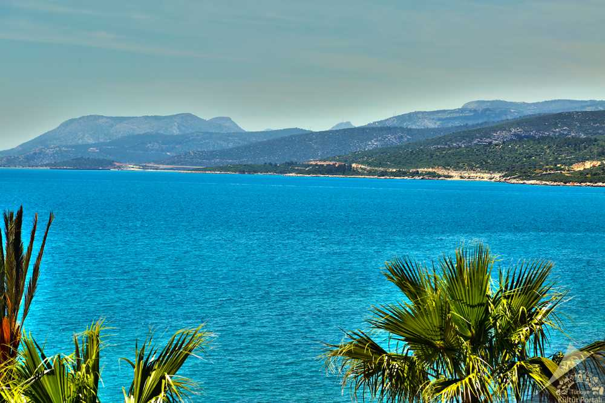

Silifke İlçesi

Silifke, Mersin'in tarihi ve kültürel zenginlikleriyle bilinen ilçelerinden biridir. Göksu Nehri ve tarihi kalıntılarıyla ünlüdür.
Gezilecek Yerler
- Silifke Kalesi: İlçenin merkezinde yer alan bu tarihi kale, eşsiz manzarasıyla dikkat çeker.
- Cennet ve Cehennem Mağaraları: Doğal oluşumlarıyla ünlü bu mağaralar, ziyaretçilerin ilgisini çeken önemli noktalardır.
- Aya Tekla Kilisesi: Hristiyanlık tarihinde önemli bir yere sahip olan bu antik yapı, bölgedeki kültürel miraslardan biridir.
Yöresel Lezzetler
Silifke'de yoğurt, tandır kebabı ve organik narenciye ürünleri oldukça meşhurdur.
Ana Sayfaya Dön